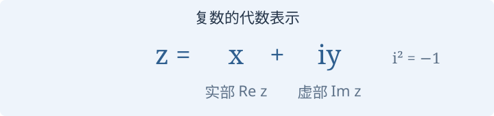
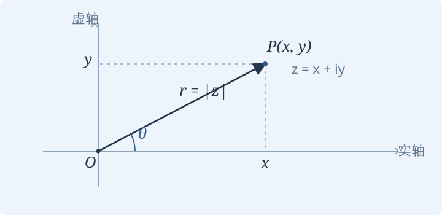

1.4 复数与数域
从实数坐标推广到复数，认识复平面与数域。
1.4.1 · 向量的分量一定是实数吗？
向量的分量一定是实数吗？
思考 · 向量的分量一定是实数吗？
前三节使用实数描述坐标。后面还会遇到复数分量的向量。为了统一讨论这些对象，需要先说明：允许作为坐标和系数的数，组成怎样的集合？
怎样在复平面上表示复数？
几何 · 复数与复平面
复数的代数表示为 \(z=x+iy\)，其中 \(x,y\in\mathbb R\)、\(i^2=-1\)。\(x=\operatorname{Re}z\) 是实部，\(y=\operatorname{Im}z\) 是虚部。在复平面上，\(z\) 对应点 \(P(x,y)\)，也对应从原点出发的箭头 \(\overrightarrow{OP}\)。


- 模长：\(|z|=\sqrt{x^2+y^2}\)。
- 辐角：对于 \(z\ne0\)，从正实轴沿逆时针方向转到 \(\overrightarrow{OP}\) 的角度 \(\theta\)，相差 \(2\pi\) 的整数倍表示同一方向。
- 共轭：\(\overline z=x-iy\)，对应关于实轴的镜像。
- 三角表示：\(z=r(\cos\theta+i\sin\theta)\)，其中 \(r=|z|\)。
零复数的模长为 0，但没有确定的辐角。
什么是数域？
定义 · 数域
本课程把 \(\mathbb C\) 的子集称为数集。如果数集 \(\mathbb F\) 至少包含两个元素，并且对加、减、乘、除运算封闭，就称为数域。这里“除法封闭”始终要求除数不为零。
更具体地，对任意 \(a,b\in\mathbb F\)，都有
“封闭”是说：运算结果仍然留在这个数集里。
例题 · 哪些集合是数域？
讲稿中最常用的数域是有理数域 \(\mathbb Q\)、实数域 \(\mathbb R\) 和复数域 \(\mathbb C\)。自然数集 \(\mathbb N\) 与整数集 \(\mathbb Z\) 都不是数域：例如 \(1/2\) 不在这两个集合中。
引入数域后，实向量和复向量可以使用同一套记号与理论。后面的线性空间理论也将在数域上统一展开。
选读 · 讲稿中的两个补充说明
数集
也是数域，本课程不作要求。非零元素的倒数仍在这个集合中：
因为 \(a,b\) 为有理数且不同时为零，分母不为零。加、减、乘的封闭性也可直接验证。
在本课程“数域是复数子集”的约定下，\(\mathbb Q\) 是最小的数域。任何数域先由 \(a-a\)、\(a/a\)（取 \(a\ne0\)）得到 0 和 1，再由四则运算得到所有有理数。
复数与数域回顾
探索 · 在复平面上观察共轭
演示即将加入在纸上标出 \(1+i\)、\(1-i\) 与 \(-1-i\)，比较它们的模长与方向。未来这里可以拖动复数点，同时观察代数表示、模长、辐角和共轭。
即时自测
设 \(z=1+i\)，求 \(|z|\)、\(\overline z\) 和一个辐角。再说明 \(\mathbb Z\) 为什么不是数域。
查看答案与解释
\(|z|=\sqrt2\)，\(\overline z=1-i\)，可以取 \(\theta=\pi/4\)。整数集含有 1 和 2，却不含 \(1/2\)，不满足除法封闭性。